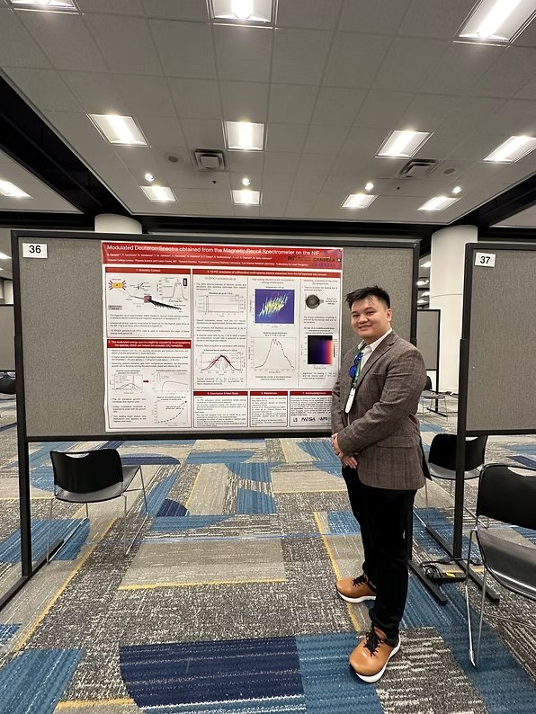

I attended my first APS Division of Plasma Physics conference in Atlanta and presented a poster on modulated deuteron spectra observed by the Magnetic Recoil Spectrometer.
The poster session led to useful discussions and new ideas for the project. It was also exciting to meet collaborators in person after months of remote work.

I particularly enjoyed the talks on fundamental plasma physics and progress toward inertial fusion energy. The conference helped put my own work in the context of a much broader research community.